Posterior Predictive Checks
Dimitris Rizopoulos
2026-01-30
Source:vignettes/Posterior_Predictive_Checks.Rmd
Posterior_Predictive_Checks.RmdGoodness-of-Fit Checks for Joint Models
To investigate the fit of a joint model to the training dataset \mathcal D_n = \{T_i, \delta_i, \mathbf{y}_i, \mathcal X_i; i = 1, \ldots, n\}, we compare simulated longitudinal measurements \mathbf{y}_i^{\sf rep} and event times T_i^{\sf *rep} from the fitted model with the observed data \mathcal D_n. Ideally, we expect that realizations from the fitted model are in close agreement with the observed data. This framework supports multiple settings, including checks for existing subjects, new subjects with only covariates, dynamic prediction at intermediate follow-up times, and cross-validated assessment. For the longitudinal component, goodness-of-fit is assessed through the mean, variance, and correlation structure, while the survival component is evaluated using empirical cumulative distributions and probability integral transforms. The association between processes is examined using time-dependent concordance statistics. A detailed presentation of this framework is given in Rizopoulos, Taylor and Kardys (2026).
Posterior-Posterior Predictive Checks
We will illustrate the use of posterior predictive checks to evaluate
the fit of a joint model to the prothro dataset. We start
by fitting a Cox regression model for the time to death and include the
randomized treatment as a baseline covariate. Next, we fit a linear
mixed-effects model for the prothrombin time, with fixed effects the
linear effect of time, the main effect of treatment, and their
interaction, and random effects random intercepts and linear random
slopes. Finally, we fit the joint model that combines the two
submodels:
CoxFit <- coxph(Surv(Time, death) ~ treat, data = prothros)
lmeFit1 <- lme(pro ~ time * treat, data = prothro, random = ~ time | id)
jointFit1 <- jm(CoxFit, lmeFit1, time_var = "time", save_random_effects = TRUE)In the call to jm(), we set the control argument
save_random_effects to TRUE such that the MCMC
iterations for the random effects are saved in the resulting model
object. Using the MCMC sample of the parameters and the random effects,
we perform posterior-posterior predictive checks, i.e., we evaluate the
model’s fit to the patients of this study.
First, we evaluate the fit of the longitudinal submodel. A standard
fit measure used in the context of posterior predictive checks is to
compare the distribution of the observed outcome with the distributions
of the simulated outcomes using the empirical cumulative distribution
function (eCDF). Following this recommendation, we use the eCDF as a
global fit measure to assess the joint model’s fit to the marginal
distribution of the longitudinal outcome. This comparison is achieved
with the following call to the ppcheck() function:
ppcheck(jointFit1, random_effects = "mcmc", type = "ecdf")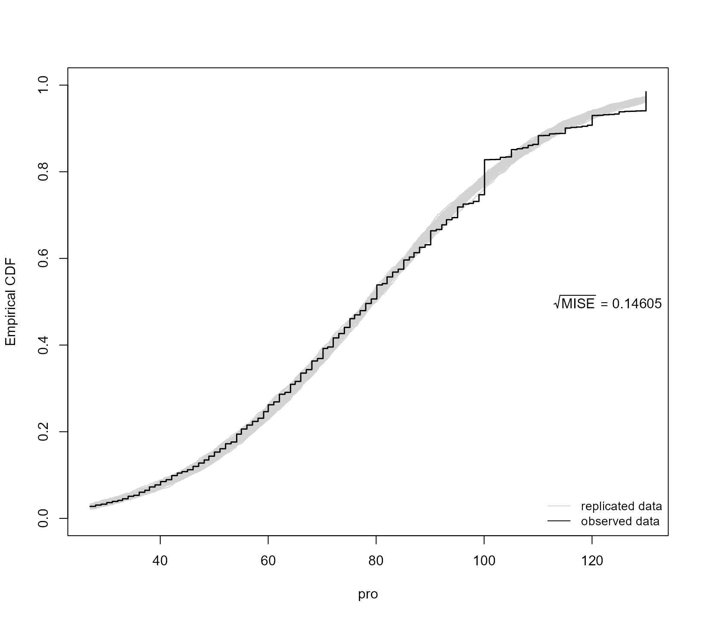
The grey lines represent eCDF curves from the 40 simulated datasets (default value), and the superimposed black line is the eCDF curve of the observed data. The MISE value shown in the figure is the mean integrated squared error between the eCDF of the simulated data and that of the observed data.
However, the eCDF does not provide insight into key aspects of the longitudinal outcome distribution, namely, the mean, variance, and correlation structure. In particular, the mean function describes the average longitudinal evolution of the outcome, the variance function the longitudinal outcome’s variance over time, and the correlation structure the pairwise correlations of the longitudinal responses as a function of the time lags (i.e., time elapsed) between measurements. To evaluate the joint model’s fit to the mean function of the longitudinal submodel, we compare the loess curve of the observed longitudinal responses with the loess curves of the simulated data:
ppcheck(jointFit1, random_effects = "mcmc", type = "average")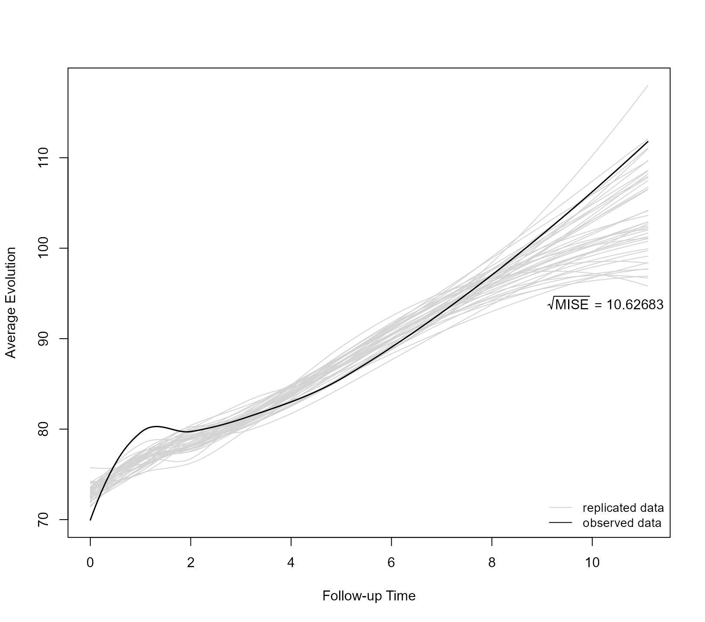
Again, the grey lines are the loess curves of the simulated data, and the superimposed black line is the loess curve of the observed data. For the variance function, we compare the loess curves of the square root of the absolute non-parametric residuals from the observed and simulated data. The non-parametric residuals are defined as the observed/simulated longitudinal responses minus the corresponding loess estimates over time. This check is performed with the following call:
ppcheck(jointFit1, random_effects = "mcmc", type = "variance")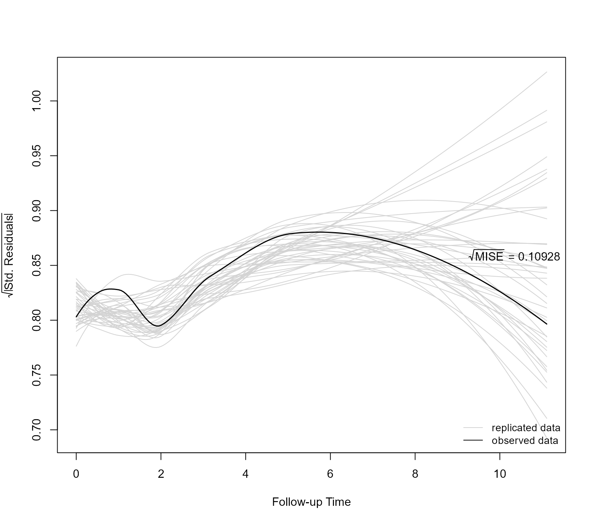
Finally, to assess the model’s fit to the correlation structure of the repeated measurements, we use the sample semi-variogram. That is, we compare the half-squared differences of the non-parametric residuals over the time lags for the observed and the simulated data:
ppcheck(jointFit1, random_effects = "mcmc", type = "variogram")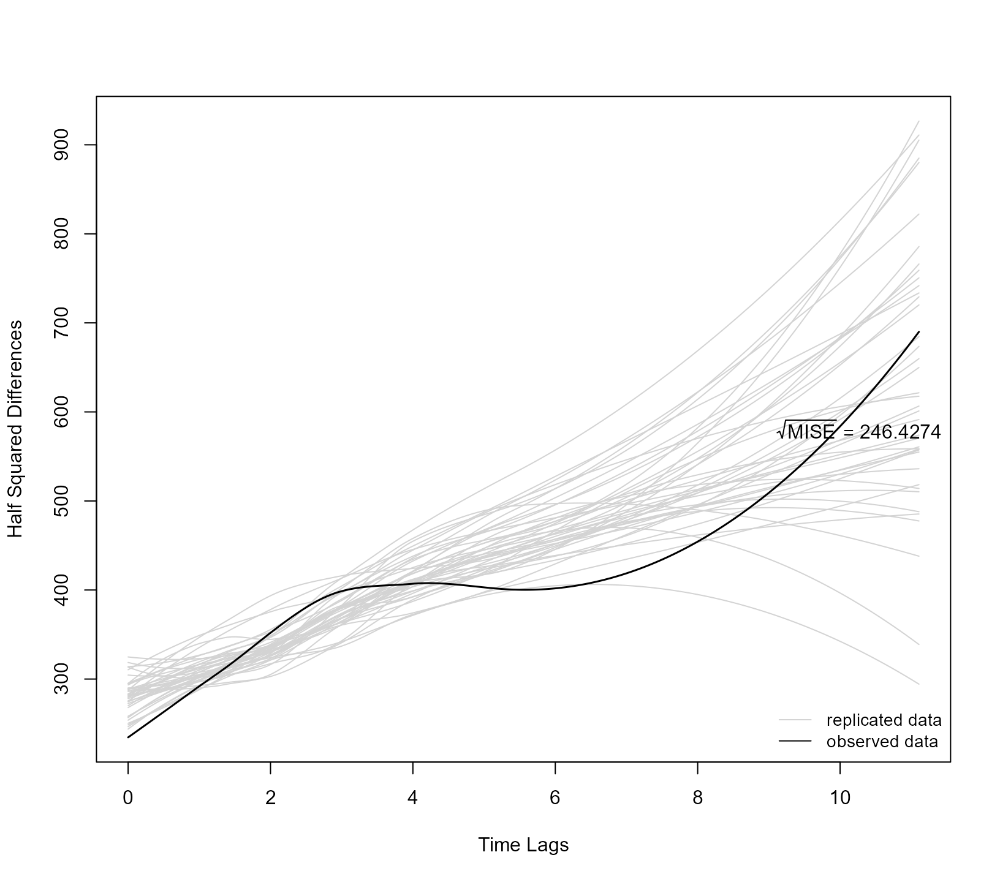
To assess the joint model’s fit to the event time, we use again the
eCDF as a global fit measure. To create simulated event time,
ppcheck() requires a function that specifies the functional
form, i.e., the function of the longitudinal submodel’s linear predictor
that enters into the linear predictor of the survival submodel. For the
model we fitted above, the functional form is the current value. Hence,
the functional form function is specified as:
FF1 <- function (t, betas, bi, data) {
# t is the time variable
# betas are the fixed effects as a list
# in multivariate joint models each element of the list is the
# vector of fixed effects for the corresponding outcome
# bi are the random effects as matrix
# data is the dataset used in the longitudinal submodel
#####
# in the specified linear mixed model we used the treatment variable
treat <- as.numeric(data$treat == "prednisone")
# the fixed effects design matrix has an intercept, the linear time effect
# the treatment effect and their interaction
X <- cbind(1, t, treat, t * treat)
# the random effects design matrix has an intercept and a linear slope
Z <- cbind(1, t)
# we define the linear predictor
eta <- c(X %*% betas[[1]]) + rowSums(Z * bi)
# we return as a matrix
cbind(eta)
}To perform the check, we use the FF1 function in the
Fforms_fun of ppcheck(); we also set the
process argument to "event":
ppcheck(jointFit1, random_effects = "mcmc", process = "event", Fforms_fun = FF1,
type = "ecdf")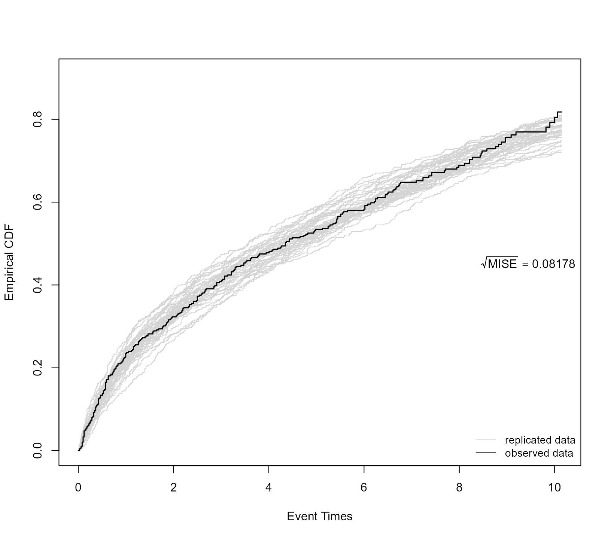
A second fit measure that focuses on individual level survival
functions, is to use the probability integral transform of the
subject-specific cumulative distribution functions. In particular, we
calculate the eCDF of each subject \{u_i =
F_i(t); i = 1, \ldots, n\} using their simulated data \{T_{im}^{\sf *rep}; m = 1, \ldots, M\}, with
m denoting the realization of the
simulated event times for the i-th
subject, i.e., u_i = \frac{1}{M}
\sum\limits_{m = 1}^M \mathbb{I}(T_{im}^{\sf *rep} \leq t). Using
the pairs \{u_i, \delta_i\}, where
\delta_i is the event indicator, we
calculate the Kaplan-Meier estimate of the probability \widehat{F}_i = \Pr(U_i \leq u). If the joint
model fits the marginal event time distribution well, we expect the
\widehat{F}_i to be the cumulative
distribution function of the uniform distribution. This type of check is
performed using the following call to ppcheck():
ppcheck(jointFit1, random_effects = "mcmc", process = "event", Fforms_fun = FF1,
type = "surv-uniform")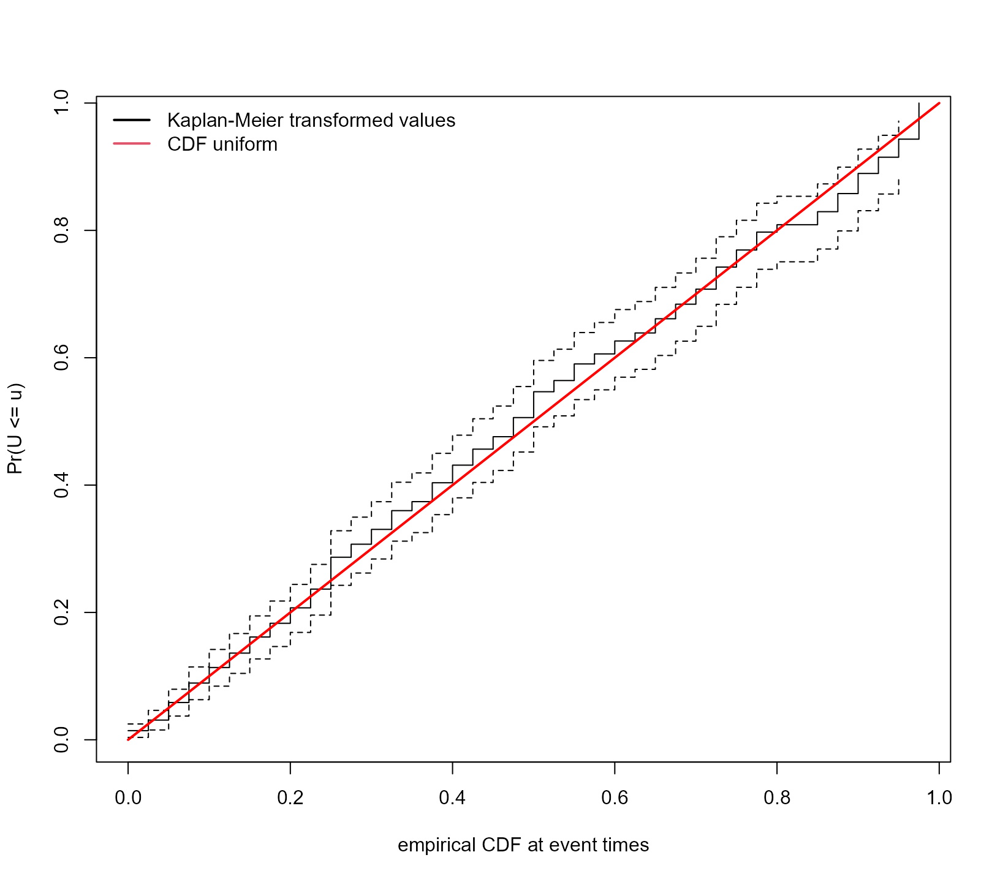
Finally, to evaluate whether the postulated joint model adequately describes the association between the longitudinal and event-time processes, we use the concordance statistic, which measures agreement between the time-to-event outcome and the longitudinal predictor:
ppcheck(jointFit1, random_effects = "mcmc", process = "joint", Fforms_fun = FF1)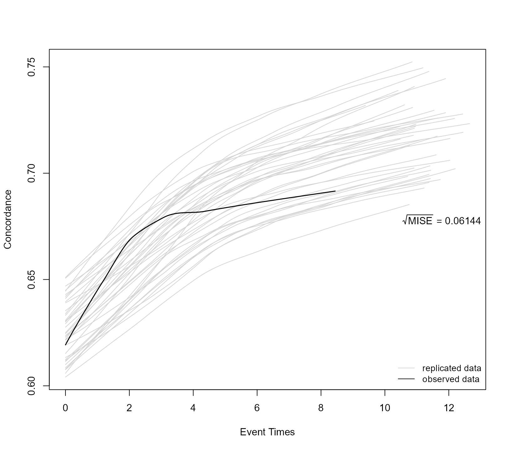
Posterior-Prior Predictive Checks
We termed the predictive checks presented above as `posterior-posterior predictive checks’ because we sampled the random effects \mathbf{b}_i for the posterior distribution given the observed data of subject i, which we have available in the training dataset \mathcal D_n. Alternatively, we can perform posterior predictive checks for generic subjects from our target population, i.e., subjects for whom we have no longitudinal or event time information, but we do have covariate information. We illustrate these checks in an updated joint model. In particular, the event time submodel is the same, but in the longitudinal submodel we now use natural cubic splines with three degrees of freedom for the time effect in both the fixed- and random-effects parts:
lmeFit2 <- lme(pro ~ ns(time, 3) * treat, data = prothro,
random = list(id = pdDiag(~ ns(time, 3))))
jointFit2 <- jm(CoxFit, lmeFit2, time_var = "time")To perform the posterior-prior checks, we also need to update the functional forms function. This now takes the form:
FF2 <- function (t, betas, bi, data) {
treat <- as.numeric(data$treat == "prednisone")
NS <- ns(t, k = c(0.4928, 2.1547), B = c(0, 11.1078))
X <- cbind(1, NS, treat, NS * treat)
Z <- cbind(1, NS)
eta <- c(X %*% betas[[1]]) + rowSums(Z * bi)
cbind(eta)
}Note that, in the definition of the natural cubic spline basis, we
need to use the same internal and boundary knots as those used in the
linear mixed model. These can be found in the predvars
attribute of the terms component of the fitted model, i.e.,
using the call attr(lmeFit2$terms, "predvars"). The
following figures show the posterior-prior predictive checks for the
longitudinal outcome using the eCDF, the mean function, the variance
function, and the semi-variogram:
ppcheck(jointFit2, random_effects = "prior", type = "ecdf", Fforms_fun = FF2)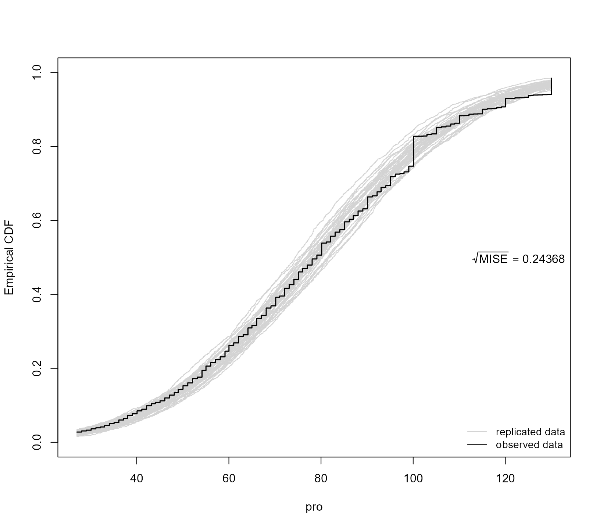
ppcheck(jointFit2, random_effects = "prior", type = "average", Fforms_fun = FF2)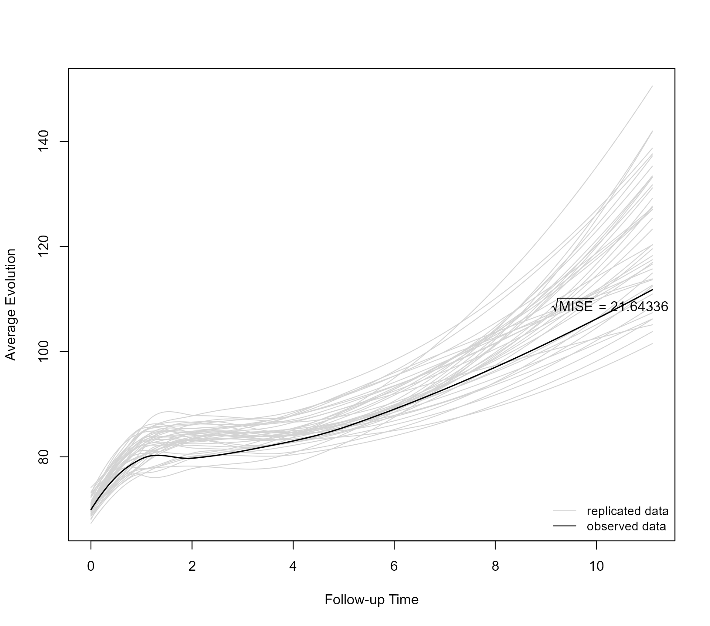
ppcheck(jointFit2, random_effects = "prior", type = "variance", Fforms_fun = FF2)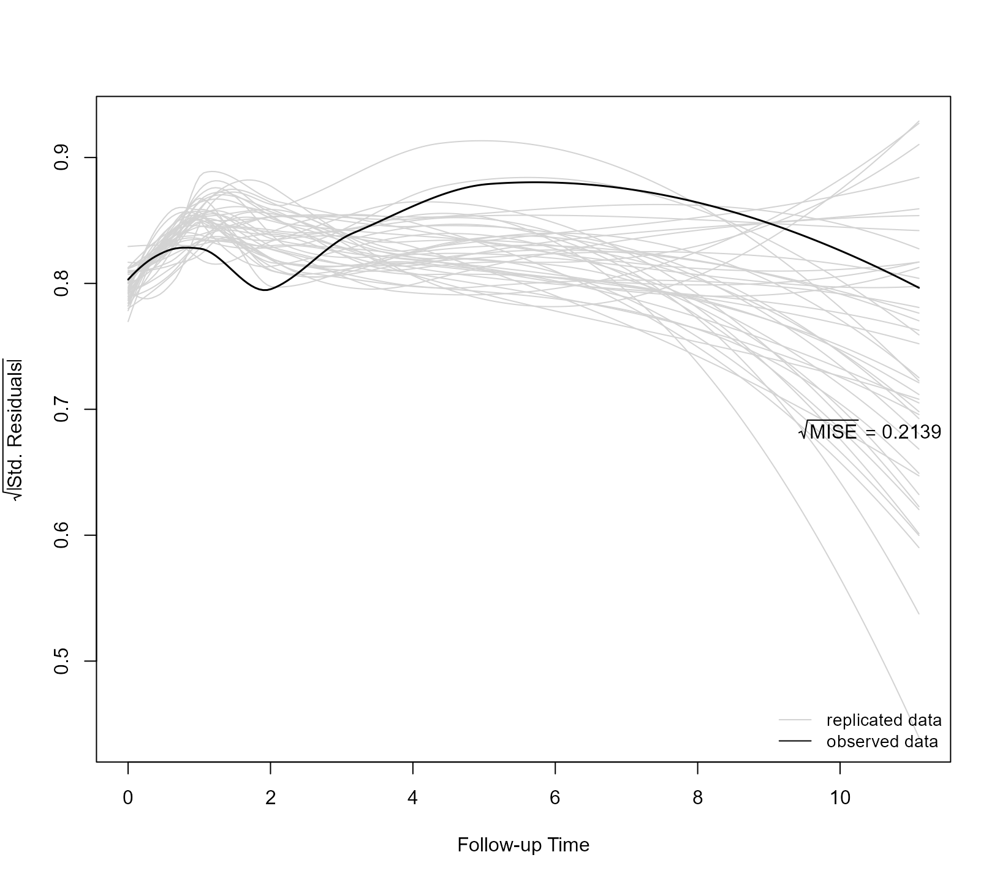
ppcheck(jointFit2, random_effects = "prior", type = "variogram", Fforms_fun = FF2)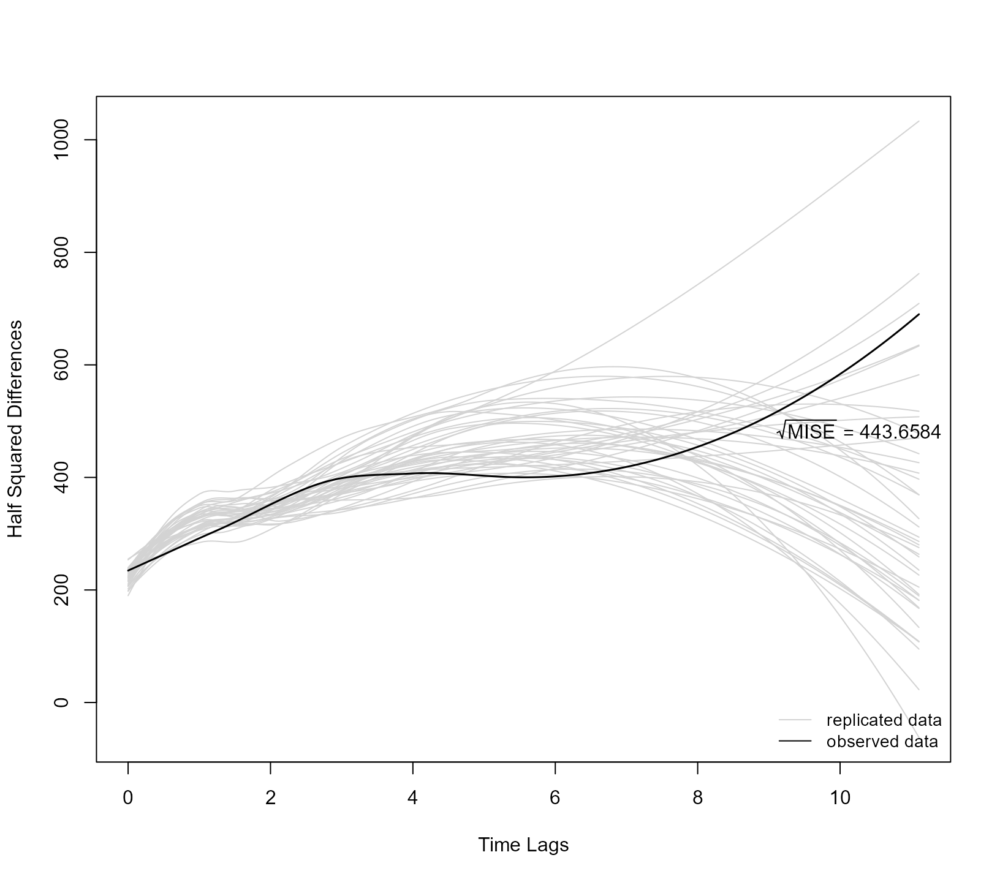
Likewise, the following calls to ppcheck() produce the
posterior-prior checks for the event time outcome:
ppcheck(jointFit2, random_effects = "prior", process = "event", Fforms_fun = FF2,
type = "ecdf")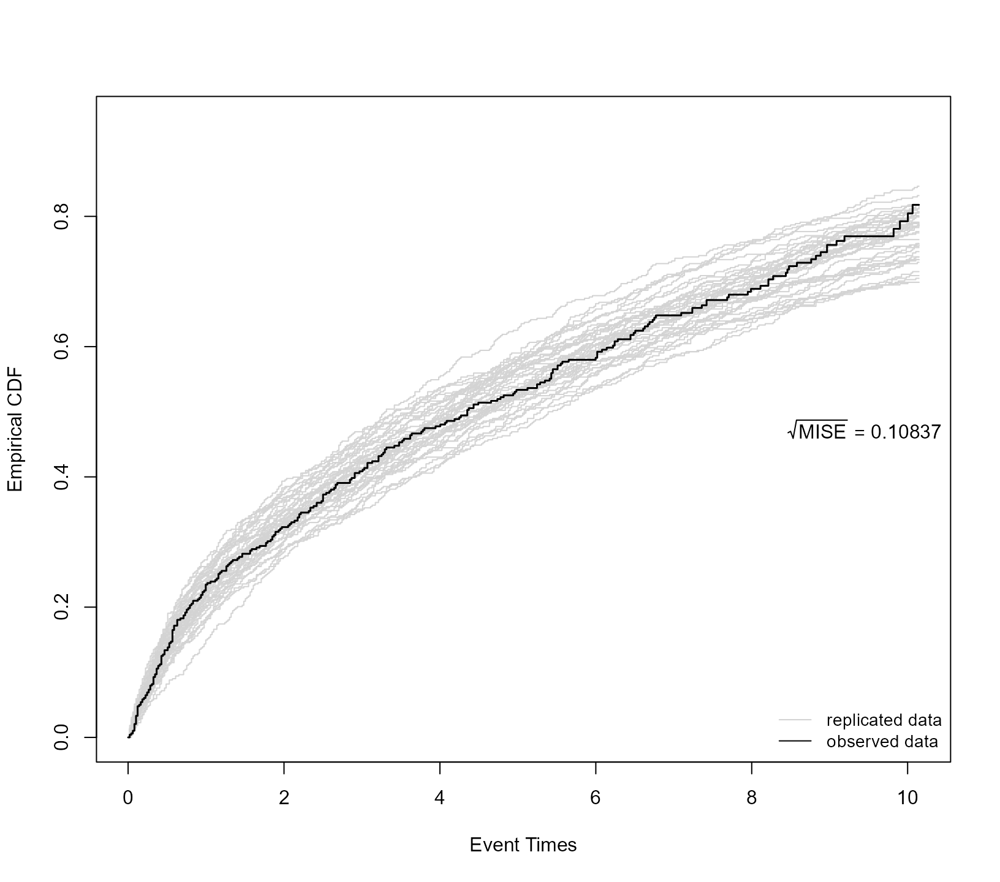
ppcheck(jointFit2, random_effects = "prior", process = "event", Fforms_fun = FF2,
type = "surv-uniform")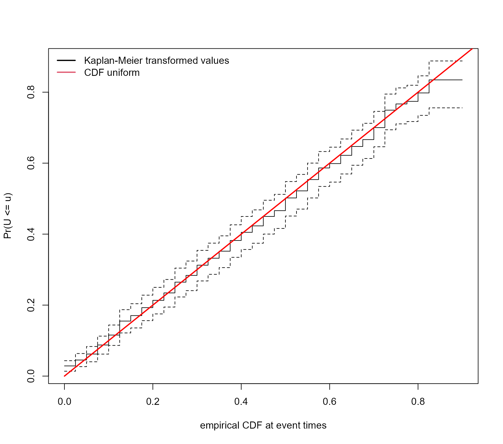
Dynamic-Posterior-Posterior Predictive Checks
A popular use of joint models is the calculation of dynamic predictions for longitudinal and survival outcomes. In this context, it is relevant to assess a joint model’s fit at different follow-up times, conditioning on the available information. In particular, we assume that we collected longitudinal measurements \mathbf{y}_i(t_L) up to time t_L, and for the individuals at risk at this time point, we are interested in assessing the fit after t_L. As an example, we perform dynamic posterior-posterior predictive checks for our model at the landmark time t_L = 3 years. We create the dataset with the available information at this time; we also set that the observed time is equal to t_L and that the event has not occurred yet:
t0 <- 3
prothro_t0 <- prothro[prothro$Time > t0 & prothro$time <= t0, ]
prothro_t0$Time <- t0
prothro_t0$death <- 0Next, we use the predict() method to extract an MCMC
sample for the random effects using only the longitudinal measurements
up to year three:
preds <- predict(jointFit2, newdata = prothro_t0, return_params_mcmc = TRUE)Finally, to perform the dynamic posterior-posterior predictive checks
with ppcheck(), we need to provide the data after the
landmark time in the newdata argument, and the MCMC sample
for the parameters and the random effects in the
params_mcmc argument, i.e.:
test_prothro <- prothro[prothro$Time > t0 & prothro$time > t0, ]
ppcheck(jointFit2, random_effects = "mcmc", type = "average",
newdata = test_prothro, params_mcmc = preds$params_mcmc)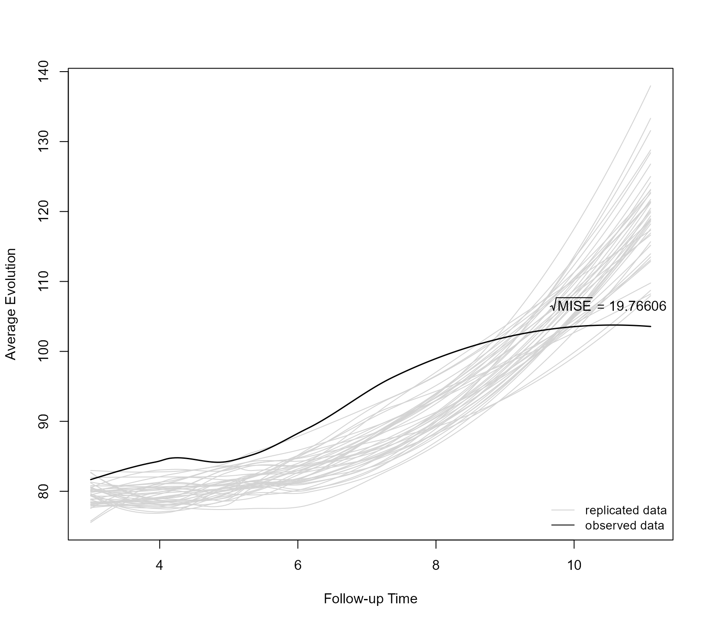
Cross-Validated Checks
A criticism of standard posterior predictive checks is that the
training dataset is used both to fit and to evaluate the model’s
goodness-of-fit, leading to potentially over-optimistic results. To
alleviate such concerns, we can evaluate the model fit in an independent
test dataset. In the absence of an external test dataset, we can utilize
a cross-validation procedure. We illustrate this approach using the
prothro dataset. We start by splitting the database into
five folds using the function create_folds():
CVdats <- create_folds(prothro, V = 5, id_var = "id")The first argument for this function is the data.frame
we wish to split in V folds. The argument
id_var specifies the name of the subject’s id variable in
this dataset. The output of create_folds() is a list with
two components named "training" and "testing".
Each component is another list with V data.frames.
Next, we define the function that will fit the joint model. This
function should accept a single data.frame argument to fit
the joint models. To optimize computational performance, we will use
parallel computing to fit the model to the different training datasets.
Hence, within the function, we should include the call
library("JMbayes2") to load the JMbayes2
package for each worker. The following code illustrates these steps:
fit_model <- function (data) {
library("JMbayes2")
data_id <- data[!duplicated(data$id), ]
CoxFit <- coxph(Surv(Time, death) ~ treat, data = data_id)
lmeFit <- lme(pro ~ ns(time, 3) * treat, data = data,
random = list(id = pdDiag(~ ns(time, 3))))
jm(CoxFit, lmeFit, time_var = "time")
}
cl <- parallel::makeCluster(5L)
Models <- parallel::parLapply(cl, CVdats$training, fit_model)
parallel::stopCluster(cl)When the first argument of ppcheck() is a list of joint
models, and its newdata argument is a list of (testing)
datasets, the function will automatically loop over the elements of
these lists and combine the final results. The following call produces
the cross-validated posterior-prior predictive checks for the variance
function of the prothrombin outcome:
ppcheck(Models, type = "variance", newdata = CVdats$testing,
random_effects = "prior", Fforms_fun = FF2)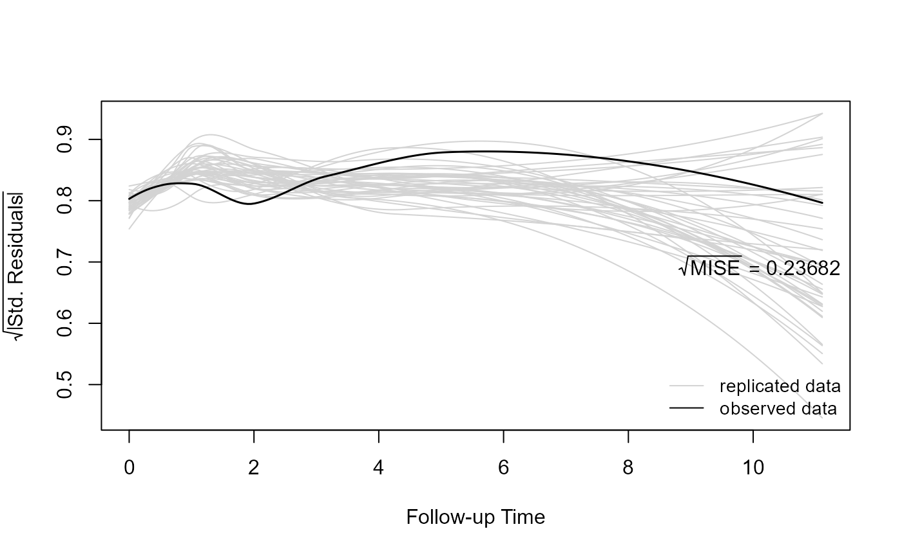